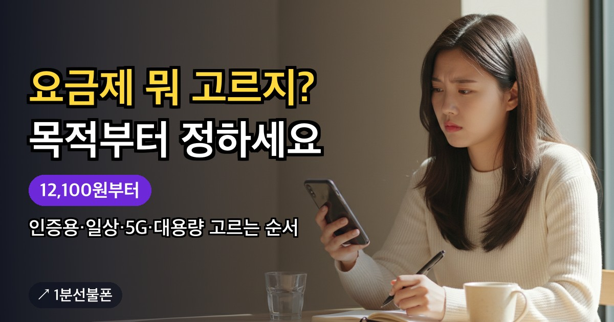

앤텔레콤 선불에서 5G 요금제는 LG U+망(L망)의 「L망 5G 선불 20GB+」 한 가지이고 월 46,400원입니다. KT망(K망) 선불 목록에는 이름에 5G가 붙은 요금제가 없어서, 5G를 쓰려면 망부터 L망으로 정해야 합니다. 이 요금제의 구성, 5G 폰과 이용 조건이라는 단서, L망 유심을 구하는 곳, 신청 순서를 차례로 적었습니다.
- 선불 5G 요금제는 「L망 5G 선불 20GB+」 하나, 월 46,400원(요금제 비교 페이지 목록 기준)
- 구성은 데이터 20GB에 소진 후 최대 3Mbps, 음성·문자 기본제공(부가/영상 50분)
- K망 선불 목록에는 5G가 없고, K망의 20GB급은 월 45,900원 「LTE 선불 459 20.3GB」
- 5G 폰이 있어야 하고, 이용 조건은 신청 화면에서 다시 확인
- 유심은 검은색 모두의원칩(이마트24·B마트·지하철 역 자판기), CU·GS25에는 없음
- 드는 돈은 유심 6,600~8,800원과 월 46,400원, 가입비 없음
선불 5G는 한 가지뿐, 「L망 5G 선불 20GB+」의 구성
요금제 비교 페이지의 선불 목록(공식 목록 수집 기준 2026-09-17)에서 이름에 5G가 들어간 요금제는 「L망 5G 선불 20GB+」 하나입니다. 고를 후보가 여러 개가 아니라서, 이 요금제의 구성이 내 쓰임새와 맞는지만 보면 됩니다.
| 항목 | 내용 |
|---|---|
| 요금제 이름 | L망 5G 선불 20GB+ |
| 통신망 | LG U+망(L망) |
| 월 요금 | 46,400원 |
| 데이터 | 20GB, 다 쓴 뒤에는 최대 3Mbps 속도제어 |
| 음성 | 기본제공(부가/영상 50분) |
| 문자 | 기본제공 |
| 단서 | 5G 단말·이용 조건 확인 |
20GB를 다 써도 데이터가 끊기지는 않고 최대 3Mbps로 이어집니다. 3Mbps는 최대 기준이라 쓰는 폰과 장소, 망 상태에 따라 체감 속도는 달라질 수 있습니다. 소진 후 속도제어가 어떤 뜻인지는 데이터 무제한 선불폰 글에서 따로 풀어 두었습니다.
K망에는 5G가 없어서, 망을 먼저 정해야 합니다
K망 선불 목록을 끝까지 내려 봐도 이름에 5G가 붙은 요금제는 나오지 않습니다. 그래서 5G 선불을 쓰겠다고 정했다면 요금제보다 망이 먼저 정해집니다. 유심도 망마다 달라서, 민트색 바로유심(K망)을 이미 샀다면 그 유심으로는 L망 요금제인 5G 선불을 고를 수 없습니다.
데이터 양이 비슷하거나 가격대가 가까운 선불 요금제를 나란히 놓으면 아래와 같습니다. 이름에 5G가 들어간 것은 첫 줄 하나입니다.
| 요금제 | 망 | 월 요금 | 데이터 | 음성·문자 |
|---|---|---|---|---|
| L망 5G 선불 20GB+ | L망 | 46,400원 | 20GB, 소진 후 최대 3Mbps | 기본제공(부가/영상 50분) |
| LTE 선불 459 20.3GB | K망 | 45,900원 | 20.3GB, 소진 후 최대 3Mbps | 기본제공(+영상/부가 30분) |
| L망 선불 396 10.3GB | L망 | 39,600원 | 10.3GB, 소진 후 최대 3Mbps | 기본제공(+영상/부가 50분) |
| L망 선불 데이터15GB | L망 | 49,500원 | 15GB(최대 3Mbps 속도제어) | 음성 100분·문자 100건 |
K망을 쓰기로 했다면 K망 유심과 요금제 목록은 앤텔레콤 K망 글에서 확인하세요. 5G가 꼭 필요하지 않다면 선불 요금제는 12,100원부터 있으니, 쓰임새별로 고르는 방법은 선불폰 요금제 추천 글을 참고하면 됩니다.
5G 폰과 이용 조건, 신청 전에 확인하는 순서
요금제 비교 페이지는 이 요금제에 「5G 단말·이용 조건 확인」이라는 단서를 붙여 두었습니다. 5G 요금제만 고른다고 되는 것이 아니라 5G 폰이 있어야 하고, 세부 조건은 신청 화면에서 확인해야 합니다. 이 글에는 확인된 것만 적었습니다.
- 폰이 5G 단말인지 확인합니다. 5G를 지원하지 않는 폰이라면 이 요금제 대신 이름에 5G가 없는 요금제를 보는 편이 맞습니다.
- 폰이 L망과 L망 유심을 지원하는지 확인합니다. 유심 준비 안내의 구매 전 체크리스트에도 있는 항목입니다.
- 신청 화면에서 요금제의 이용 조건을 읽습니다. 최종 상품·요금·제공 조건은 공식 원문과 신청 화면이 기준입니다.
- 신청 화면에서 요금제를 직접 다시 고릅니다. 요금제 비교 페이지에서 본 상품은 신청서에 자동으로 넘어가지 않습니다.
다른 통신사에서 쓰던 폰은 단말기에 문제가 없으면 유심을 끼우고 전원을 2~3회 이상 껐다 켜서 쓸 수 있습니다. 다만 일부 단말기는 유심 이동이 제한될 수 있다고 공식 FAQ가 안내합니다.
5G 선불에 맞는 유심은 검은색 모두의원칩
5G 선불은 L망 요금제라서 유심도 L망용인 「모두의원칩」이어야 합니다. 포장은 검은색입니다.
- 파는 곳 — 이마트24, B마트, 지하철 역 자판기
- 팔지 않는 곳 — CU·GS25에는 LG망 유심이 없습니다. 이 두 곳의 민트색 바로유심은 K망용입니다.
- 가격 — 편의점 유심은 6,600~8,800원이고 요금제와 별도입니다.
- 근처에 파는 곳이 없을 때 — 신청 페이지 안에서 택배 배송이나 퀵 배송으로 받을 수 있습니다.
예전 통신사에서 쓰던 유심은 앤텔레콤 개통에 재사용할 수 없으니 새로 구해야 합니다. 사기 전에 포장의 상품명과 앤텔레콤 L망 호환 안내를 확인하세요. L망 유심 준비와 L망의 다른 요금제는 유플러스 선불폰 글에 있습니다.
5G 선불 신청 순서와 드는 돈
미납·연체·신용불량이어도 본인 명의로 개통할 수 있습니다. 신용조회 없이 신청하고, 약정·위약금 없음, 가입비 없음 조건입니다. 비대면으로 하려면 본인 명의 간편인증서(웹은 토스·카카오 등)가 있어야 합니다. 간편인증서가 없다면 센터에 방문해 개통합니다.
- 검은색 모두의원칩과 5G 폰, 본인 명의 간편인증서를 준비합니다.
- 신청 페이지에서 신규가입(새 번호)과 번호이동(쓰던 번호 유지) 중 가입 유형을 고릅니다. 셀프개통 시간은 신규가입 08:00~21:50, 번호이동 10:00~19:50입니다.
- 안면인증과 본인인증을 합니다. 2026년 10월부터는 안면인증을 반드시 통과해야 개통할 수 있습니다. 형광등 빛이 얼굴에 반사되면 인식이 잘 안 되니 조명 바로 아래는 피하세요. 고개를 돌리라는 안내가 나오면 눈도 고개 방향으로 같이 옮기세요.
- 유심 정보를 입력하고 요금제에서 「L망 5G 선불 20GB+」를 고른 뒤 이용 조건을 확인합니다.
- 개통하기를 누르고 처리 결과를 확인합니다.
드는 돈은 유심값 6,600~8,800원과 월 요금 46,400원입니다. L망 유심이 있으면 5분이면 개통까지 마칩니다. 웹에서 직접 개통한 날에는 본사 확인 전화(해피콜)가 그날 안에 걸려 옵니다(공휴일 제외). 이 전화를 받지 못하면 번호가 해지될 수 있으니 모르는 번호도 받으세요. 충전도 개통한 날 안에 끝내야 합니다. 화면별 순서는 개통 방법 안내에 있습니다.
자주 묻는 질문
5g 선불요금제는 몇 가지나 있나요?
요금제 비교 페이지의 선불 목록 기준으로 이름에 5G가 들어간 요금제는 「L망 5G 선불 20GB+」 하나이고 월 46,400원입니다. 데이터 20GB에 소진 후 최대 3Mbps, 음성·문자 기본제공(부가/영상 50분) 구성입니다.
편의점에서 민트색 바로유심을 샀는데 이걸로 5G 선불을 쓸 수 있나요?
민트색 바로유심은 K망용이고, K망 선불 목록에는 5G 요금제가 없습니다. 5G 선불은 L망 요금제라서 검은색 모두의원칩이 필요합니다. 이마트24·B마트·지하철 역 자판기에서 구하거나 신청 페이지에서 택배·퀵 배송으로 받으세요.
5G 폰이 아닌데 5G 선불 요금제로 신청해도 되나요?
이 요금제에는 「5G 단말·이용 조건 확인」 단서가 붙어 있어 5G 폰이 필요합니다. 5G를 지원하지 않는 폰이라면 이름에 5G가 없는 요금제 가운데서 고르고, 조건은 신청 화면에서 다시 확인하세요.
5G 선불 20GB를 다 쓰면 데이터가 끊기나요?
끊기지 않고 최대 3Mbps로 속도가 제어된 채 이어집니다. 3Mbps는 최대 기준이라 폰과 장소, 망 상태에 따라 체감 속도는 달라질 수 있습니다.
5G 선불 유심은 CU나 GS25에서도 파나요?
CU·GS25에는 LG망 유심이 없습니다. 5G 선불에 쓰는 검은색 모두의원칩은 이마트24, B마트, 지하철 역 자판기에서 팔고, 편의점 유심은 6,600~8,800원입니다.
같이 보면 좋은 글

앤텔레콤 K망 — KT망 선불 유심 구하는 곳과 요금제 고르는 법
앤텔레콤 선불을 알아보다 「K망」이라는 말에서 막혔다면 이렇게 이해하면 됩니다. K망은 앤텔레콤 선불…

통화 무제한 선불폰 — 음성·문자 기본 제공 요금제와 빠지는 통화
전화를 자주 거는 사람이 선불폰을 알아볼 때 가장 먼저 걸리는 건 통화량입니다. 선불폰에도 음성통화와…
세컨폰 요금제 — 받기만·통화 위주·데이터 위주로 나눠 고르는 표
세컨폰 요금제는 두 번째 번호를 어디에 쓰는지부터 정하면 고르기 쉽습니다. 받기만 하거나 인증 문자용이면…

선불폰 요금제 추천 — 인증용·일상·5G·대용량, 목적별 고르는 법
선불폰 요금제는 한 줄로 순위를 매기기보다 이 번호로 무엇을 할지부터 정해야 고르기 쉽습니다. 인증 문자만…
최종 업데이트: